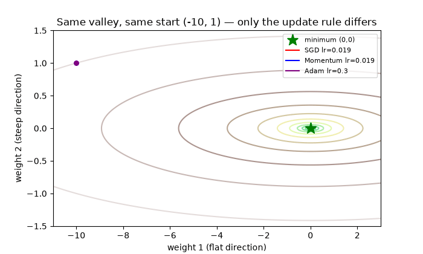
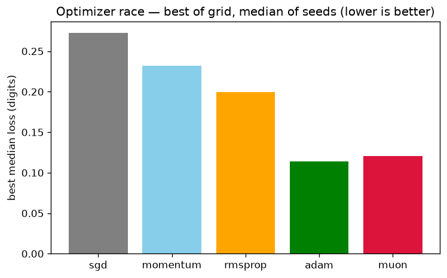
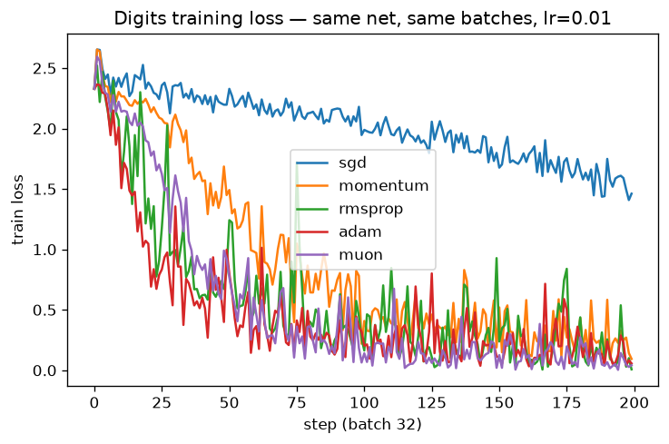
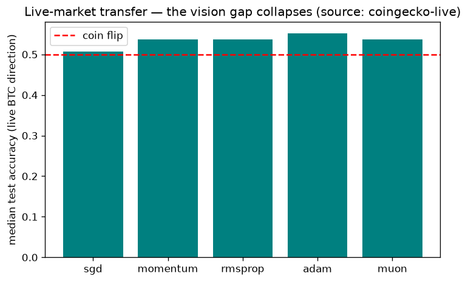

🎬 Watch: the same valley, three rules

Red = plain descent bouncing wall-to-wall. Blue = momentum. Purple = Adam. Generated by experiments/make_media.py — every dot is a measured step.
🌱 The four ideas (60-second guide)
- Training is walking downhill. Weights = position. Loss = height. Goal = the bottom.
- The gradient points uphill — nudge each weight, watch the loss, step the other way.
- One step size serves a steep wall and a flat floor — that conflict is the whole story; every optimizer is an escape attempt.
- Width beats peak. Adam won by working at 52/101 learning rates, not by having the highest ceiling.
📊 Measured results (digits, median of seeds)
| Optimizer | Loss | Accuracy |
|---|---|---|
| Plain descent | 0.273 | 88.2% |
| Momentum | 0.232 | 90.0% |
| RMSprop | 0.200 | 89.8% |
| Adam | 0.114 | 93.2% |
| Muon (reference-faithful) | 0.121 | 93.0% |
| SpectraMix (ours) | 0.072 | 94.8% |
| Referee-hedge (ours) | 0.053 | 95.6% |
| Pilot, 0 LRs (ours) | 0.046 | 94.2% |
Quick protocol (200 steps). At 400 steps: Pilot 0.019 / 96.0%, Referee-greedy 0.052 / 95.6%, SpectraMix 0.058 / 95.2%. Live BTC market compresses near coin-flip (50–54% for all). Full numbers in results/results.json.



🔬 Our inventions (all measured, all reproducible)
| What | Idea in one line | Result |
|---|---|---|
| SpectraMix | Blend Muon ↔ Adam by measured spectral concentration | 400-step 0.058 / 95.2% |
| Referee | Per-step election of updates on fresh data — measure, don't model | Hedge 0.053 / 95.6% |
| Pilot | Step-size-free: elect direction + scale, DoG base, spike guard, 0 LRs | 400-step 0.019 / 96.0% |
Reproduce: make spectramix, make referee, make pilot. The loss itself votes Adam early → spectral late — schedule rediscovered from data, never prescribed.
🧪 Quiz — from zero to professional (10 questions)
Pick an answer, get instant feedback. Score 8+ and you know more than most interview candidates.
🚀 Run it yourself
git clone <this-repo> && cd optimizer-race-from-scratch-2026
pip install -r requirements.txt
python3 experiments/run_all.py --quick # ~2 minFull race: python3 experiments/run_all.py --full · Docker: docker compose run --rm optimizer-race-quick · Paper draft: paper/PAPER.md